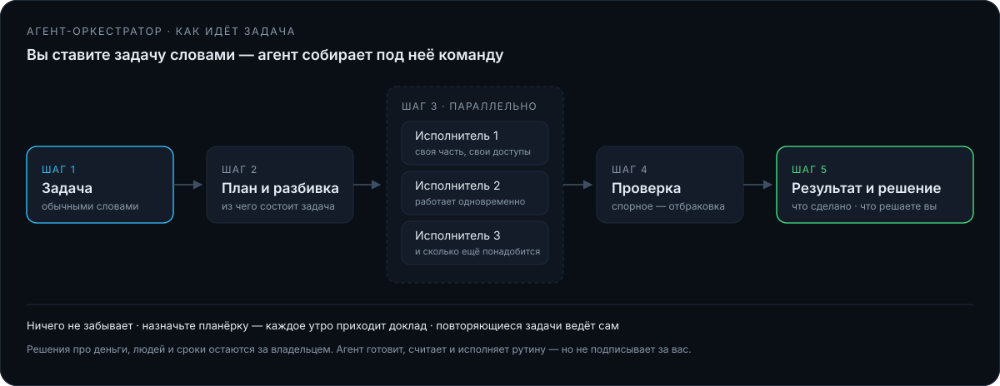

Прихожу. Делаю. Передаю.
Беру операционное управление на себя: навожу порядок в цифрах и процессах, выстраиваю команду и передаю управление вам.
Первая оценка — бесплатно. Отвечаю лично.
Как я работаю
Три шага. На каждом понятно, что происходит и что вы получаете.
Смотрю и говорю честно
Первая встреча — 45 минут. Разбираю ваши цифры и говорю прямо: есть ли резервы и где.
Нахожу и считаю
Разбор за 3–5 дней по данным вашей учётной системы: где теряются деньги и что чинить первым.
Передаю управление
Навожу порядок в управлении и передаю его вашей команде. Вы контролируете по цифрам, а не в рутине.
Управление держится на исполнении: считать, сверять и докладывать нужно каждый день. Дальше начинается человеческое — квалифицированных рук не всегда хватает, всё не всегда помнится, дисциплины и эффективности тоже бывает мало. Здесь и появляется агент-исполнитель.
Вы говорите задачу словами — приходит готовый результат
Это не помощник, который отвечает на вопросы. Это исполнитель, который берёт задачу целиком: сам разбивает её на части, раздаёт работу, проверяет сделанное и сводит в один ответ.
Мы не ставим вам программу. Сначала я снимаю с вас то, как вы решаете: критерии, приоритеты, запреты, ритм дня и недели, ваш язык. Это ваша карта. Дальше — один узел, где уходят деньги, и цифра, по которой через тридцать дней принимается работа. Права и лимиты — ваши, метод — мой.
Задача
Вы описываете словами, что нужно: «разберись, почему просела маржа на маркетплейсе».
План
Агент разбивает её на части и говорит, что будет делать и в каком порядке.
Исполнители
Под каждую часть он создаёт отдельного агента и запускает их одновременно — они работают параллельно, а не по очереди.
Проверка
Каждый результат он проверяет и отбраковывает: цифры сверяет с первоисточником, спорное помечает, выдуманное не пропускает.
Отчёт
Вам приходит итог: что нашёл, что сделал, что требует вашего решения.

Чем отличается от отраслевого агента
Отраслевой агент делает одну работу — отвечает на однотипные вопросы, ведёт переписку, следит за ценами. Оркестратор берёт роль диспетчера на себя: он ставит задачи, управляет исполнителями и отвечает за результат. Первый экономит часы. Второй освобождает вас как управленца.
Ничего не забывает
Всё, что вы поручили, остаётся у него в работе. Назначьте планёрку — и каждое утро приходит доклад: что сделано, что не получилось, что требует вашего решения. Повторяющиеся задачи он ведёт сам.
Решения про деньги, людей и сроки остаются за вами. Агент готовит, считает и исполняет рутину — но не подписывает за вас.
С чем я работаю
Три ситуации, в которые меня зовут чаще всего. Если вашей здесь нет — напишите, разберусь.
Антикризисный разбор
Когда цифры показывают минус, а причины непонятны.
Маркетплейсы и торговля
Единый учёт, маржинальность по позициям, выгрузки.
Продажа и вывод бизнеса
Упакую, подниму стоимость, найду покупателя.
Ещё: производство и себестоимость · бытовая химия · пример управленческого дашборда · инструменты и технологии
Пищевой комбинат, оборот 2,1 млрд ₽ в год. Выявлено 70+ млн ₽ скрытых потерь, маржинальная доходность восстановлена с 24% до 34%, угроза закрытия снята.
Подробнее о кейсе →Обсудим ваш бизнес
На первом разговоре разберу, где теряются деньги, и скажу, что чинить первым. Дальше вы решаете — работать со мной или делать самим.